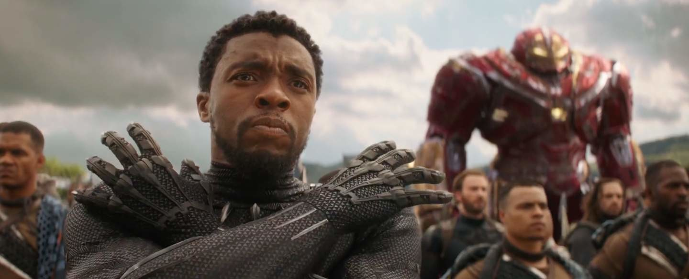

BLACK PANTHER
WAKANDA FOREVER!

Chadwick boseman doing the wakanda salute.
-Photo credit sysywire
Comic books to me are fairy tales for grown-ups.
-Stan Lee
A brief history about Black Panther:
- Black Panther is a fictional superhero appearing in American comic books published by Marvel Comics.
- Black Panther's real name is T'Challa, and he is depicted as the king and protector of the fictional African nation of Wakanda.
- Along with possessing enhanced abilities achieved through ancient Wakandan rituals of drinking the essence of the heart-shaped herb, T'Challa also relies on his proficiency in science, rigorous physical training, hand-to-hand combat skills, and access to wealth and advanced Wakandan technology to combat his enemies.
- Black Panther is the first superhero of African descent in mainstream American comics, having debuted years before early black superheroes such as Marvel Comics' the Falcon (1969), Luke Cage (1972), and Blade (1973) or DC Comics' John Stewart in the role of Green Lantern (1971).
- In one comic book storyline, the Black Panther mantle is handled by Kasper Cole, a multiracial New York City police officer. Beginning as an impersonator, Cole would later take on the moniker of White Tiger and become an ally to T'Challa. The role of Black Panther and leadership of Wakanda was also given to T'Challa's sister Shuri for a short time.
- Black Panther has made numerous appearances in various television shows, animated films and video games. Chadwick Boseman portrayed the character in Phase Three of the Marvel Cinematic Universe's films (Captain America: Civil War (2016), Black Panther (2018), Avengers: Infinity War (2018), and Avengers: Endgame (2019), and voiced the character in the first season of the animated series What If...? (2021).
- Lee had cameo appearances in many Marvel film and television projects, including those within the Marvel Cinematic Universe.
- In 2011, Black Panther was ranked 51st overall on IGN's "Top 100 Comic Books Heroes" list.